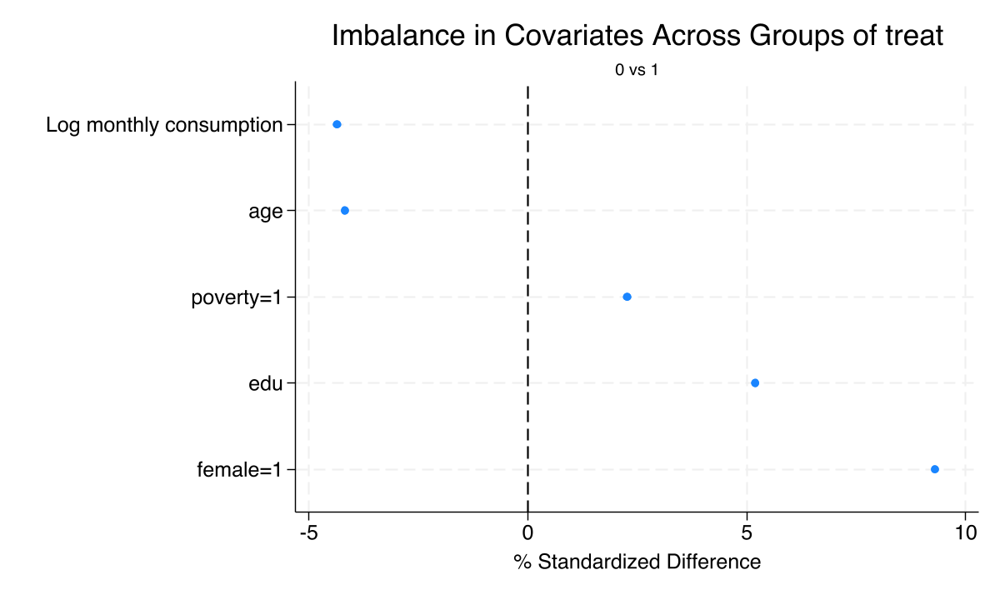
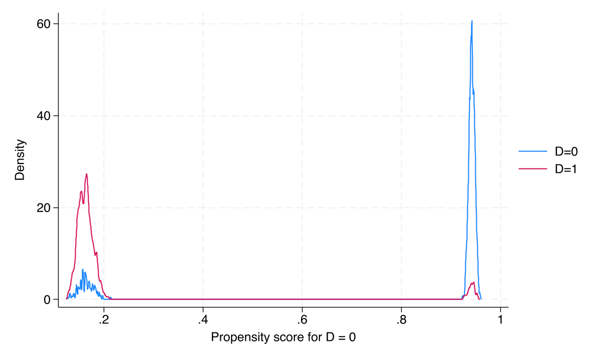

Assignment — treat randomized within poverty strata (intent-to-treat)
Receipt — D, endogenous: only 85% of offered households took up
State the wedge early: random treat is exogenous; actual D is a choice. Most of the deck estimates the offer effect; Act III’s coda returns to receipt.
Randomization worked: every covariate sits under the 10% balance threshold

Standardized mean differences for all baseline covariates. Dashed lines mark the \(\pm 10\%\) rule of thumb; female is the only borderline case at \(\approx 9.3\%\).
The only chance imbalance is female-headship — and it is borderline, not broken
Covariate
Control
Treatment
SMD
Consumption \(y\)
10.025
10.006
<0.05
Age
35.34
34.93
<0.05
Education
11.97
12.08
0.052
Female-headed
0.484
0.531
0.093
Poverty
0.307
0.318
<0.05
\(p = 0.038\) flags female, but the SMD of \(9.3\%\) is the right lens — large \(n\) makes tiny gaps “significant.”
A formal balance check: AIPW on baseline data should — and does — find nothing
The headline cross-sectional result: every method converges on 0.113
0.113
ATE of the offer · RA, IPW, and doubly-robust IPWRA agree to three decimals (SE 0.019)
RA, IPW, and DR agree because randomization made every model approximately right
Method
Models
Estimand
Estimate
95% CI
Simple diff-in-means
none
ATE
0.116
[0.078, 0.154]
Regression adjustment
outcome
ATE
0.113
[0.075, 0.150]
Inverse prob. weighting
treatment
ATE
0.113
[0.075, 0.150]
IPWRA (doubly robust)
both
ATE
0.113
[0.075, 0.150]
True effect
—
—
0.12
—
Adjusted estimates (\(0.113\)) sit just below the raw \(0.116\) — that gap is the precision gain from controlling for the gender imbalance.
Panel data lets each household be its own control — differencing out the invisible
Cross-sectional adjustment can only control for what you observe.
Difference-in-differences compares each household to itself over time, cancelling every time-invariant unobservable — motivation, geography, family culture.
DiD is a difference of differences — the control trend is the counterfactual
Subtract the control-group’s predicted change from each household’s actual change \(\Delta Y_i\), then IPW-reweight so controls resemble the treated. Consistent if either model is right.
Needs only conditional parallel trends — covariate-specific time trends are allowed.
The Resolution
Act III
Two independent DR-DiD implementations agree exactly on 0.137
0.137
ATT of the offer · drdid and xthdidregress aipw match to four decimals (SE 0.027)
Cross-section vs. panel: different estimands, different data, same truth inside the bars
Method
Estimand
Data
Estimate
95% CI
RA / IPW / DR
ATE
endline
0.113
[0.075, 0.150]
Basic DiD
ATT
both waves
0.135
[0.081, 0.188]
DR-DiD (drdid)
ATT
both waves
0.137
[0.084, 0.191]
DR-DiD (xthdidregress)
ATT
both waves
0.137
[0.084, 0.191]
True effect
—
—
0.12
—
DiD’s value is not a tighter SE — it is robustness to time-invariant unobservables.
Offer vs. receipt: only 85% complied, so the per-recipient effect is larger
Most of the deck estimated the offer (treat, intent-to-treat). The effect of receipt (D) needs the random offer as an instrument, because take-up is a choice.
Specification
Estimand
Estimate
95% CI
etregress (IV)
ATE (receipt)
0.147
[0.099, 0.195]
teffects ipwra + \(y_0\)
ATE (receipt)
0.117
[0.054, 0.180]
The doubly-robust receipt estimate (\(0.117\)) lands closest to the truth; both cover \(0.12\).
Receipt-model overlap holds too — the IV story rests on solid balance

Propensity-score densities for receivers vs. non-receivers of the transfer show ample common support after IPWRA weighting.
Does any of this make the result causal? No — design does, methods only discipline
Objection. Twelve estimators all near 0.12 — surely that proves the cash transfer caused the gain?
Response. The randomization identifies the effect; the estimators merely recover it efficiently and robustly. On real observational data the same methods rest on conditional independence and parallel trends — assumptions a clean RCT hands you for free but the world rarely does.
When the design is clean, every honest estimator finds the same truth — and that agreement is the point.